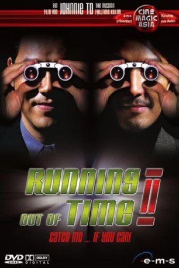

#11757 Running Out of Time II
 
 IMDB-Wertung: 5.8 / 10
IMDB-Wertung: 5.8 / 10  Metascore: 0
Metascore: 0 
Seit einigen Tagen bekommt der Polizist Sang von einem Unbekannten Pakete zugeschickt. Am Anfang kann er mit den Inhalten der Pakete nichts anfangen, doch schon bald wird er von dem Unbekannten zu einem gefährlichen Spiel herausgefordert. Mit den Inhalten als Anhaltspunkt macht sich Sang schließlich auf die Jagd nach ihm und stellt fest, dass dieser es auf eine große Firma abgesehen hat. Ein irres Katz- und Maus-Spiel beginnt...
Jahr: 2001
Dauer: 95 Minuten
FSK: 16
Land: Hong-Kong Studio: China Star EntertainmentTonspuren:
Untertitel: Deutsch,
Auflösung: 1080p (1920x1040) Größe: 8284 MB
Genre: Action, Krimi
Regisseur: Wing-Cheong Law, Johnnie To
Drehbuch: Nai-Hoi Yau, Kin-Yee Au, Julien Carbon, Laurent Courtiaud, Nai-Hoi Yau
Soundtrack: Ying-Wah Wong
Darsteller:
 Ching Wan Lau als Inspector Ho Sheung Sang
Ching Wan Lau als Inspector Ho Sheung Sang- Ekin Cheng als The Thief
- Kelly Lin als Teresa
 Shiu Hung Hui als Assistant Commissioner Wong Kai Fat
Shiu Hung Hui als Assistant Commissioner Wong Kai Fat Suet Lam als Ken
Suet Lam als Ken- Ruby Wong als Madam
- Yuin-Shan Ding als Shan
Datei: X:\HD-Eastern-Collections\Running Out of Time\Running Out of Time II (2001, FSK16, 1920x1040).mkv seit 20.09.2019
Festplatte: HD Eastern+Western
 Alle Filme aus Gruppe 'HD-Eastern-Collections\Running Out of Time'
Alle Filme aus Gruppe 'HD-Eastern-Collections\Running Out of Time'